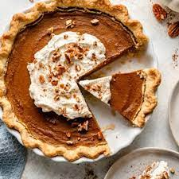

Pumpkin Pie

Description
How to bake a fresh and tasty pumpkin pie!
Ingredients
- 3/4 Cup Sugar
- 1 1/2 teaspoons pumpkin pie spice
- 1/2 can pumpkin (not pumpkin pie mix)
- 1 1/4 cups evaporated milk or half and half
- 2 eggs, beaten
- 1 premade pie crust
Steps
- Heat oven to 425F
- In large bowl, beat sugar, pumpkin pie spice, salt, pumpkin, evaporated milk and eggs with wire whisk until well blended. Place frozen pie crust onto cookie sheet. Pour filling into pie crust. Place filled pie crust on cookie sheet into preheated oven.
- Bake 15 minutes. Reduce oven temperature to 350°F; bake 40 to 50 minutes longer or until knife inserted near center comes out clean. Cool on cooling rack at least 2 hours. Serve or refrigerate until serving time. Store in refrigerator.
HOME